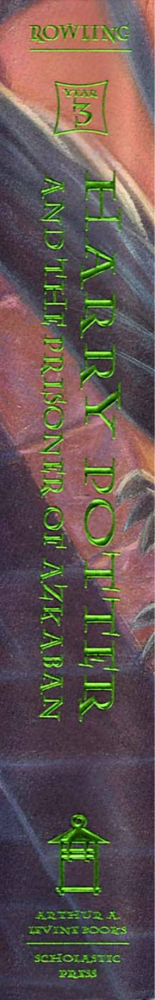

3HGarri Potter Azkaban mahbusi sirini ochishga harakat qiladi.
Bu kitob Garri Potterning Xogvarts sehrgarlik maktabidagi uchinchi yilini tasvirlaydi. Garri Azkabandan qochgan xavfli mahbus Sirius Blekdan xavf ostida ekanligini bilib oladi. Sarguzasht davomida u yangi sirlar, do'stlik va o'tmishning yashirin haqiqatlarini kashf etadi.